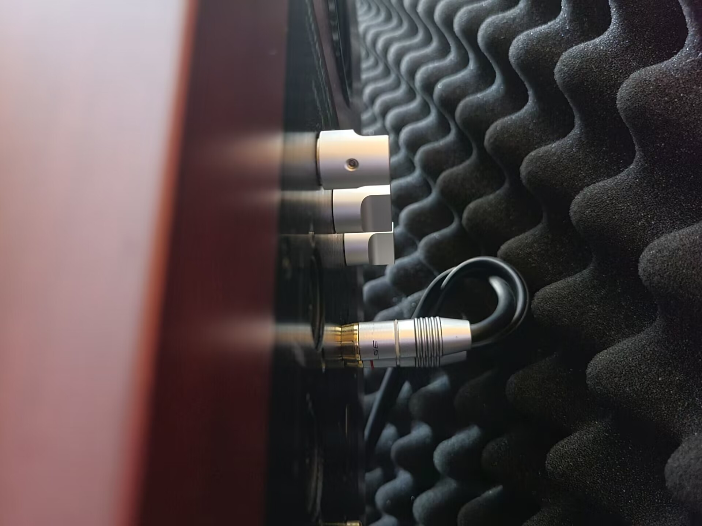
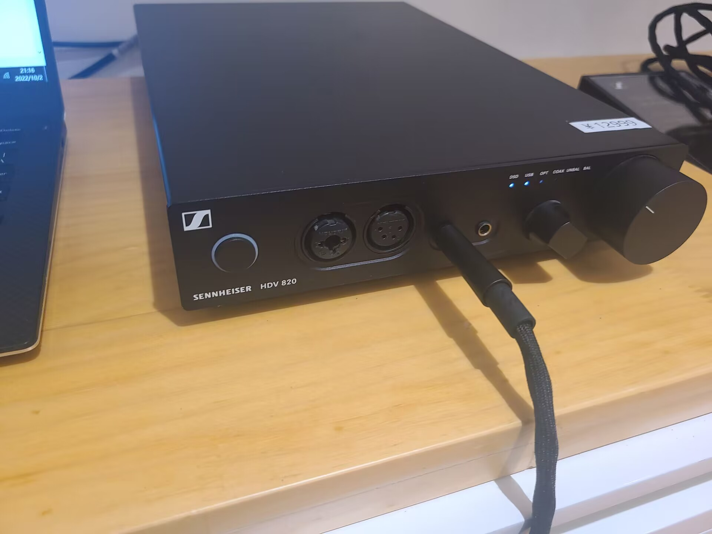
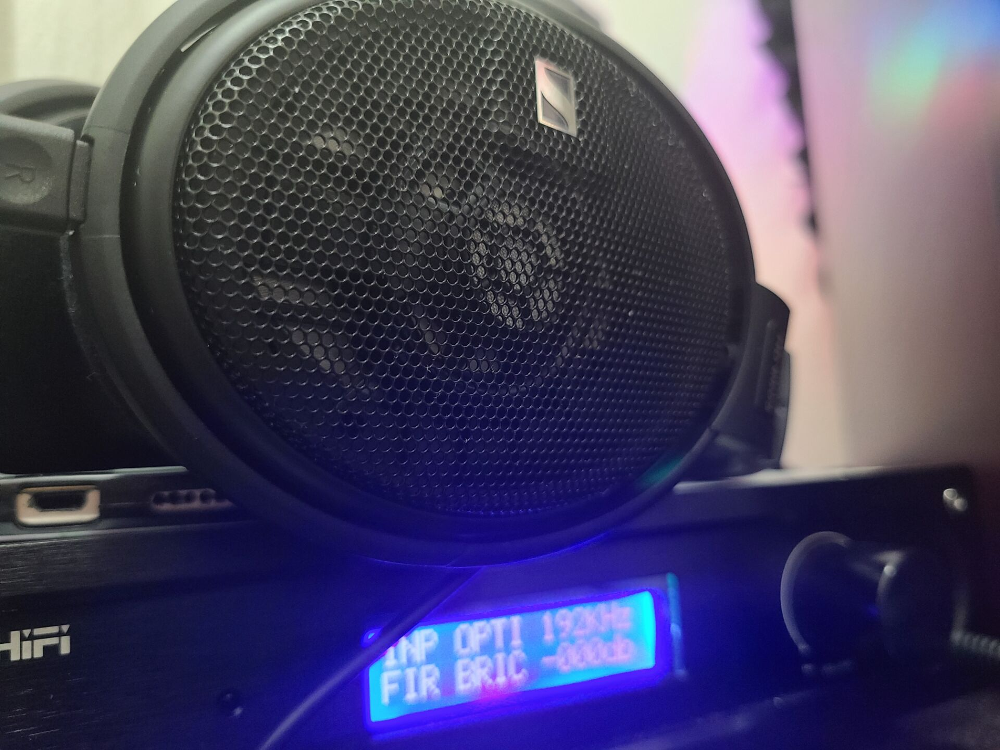

返回音响耳机相关

是的，你可能会很奇怪，这个还有什么讲究吗？什么音量是合适的，似乎根本不用想，每个人都会有不同的标准，随便调嘛。然而并非如此。
这个问题其实类似D100外接了一个麦克风，输入源开到1-2，D100开到Max如果这样做了那么回放时你会发现底噪特别大反之亦然
与音量大小关系最密切的是动态范围。而音源确定、功放确定的情形下，限制动态范围的是前级。
留意发烧后级放大器似乎都没有音量旋钮，cd机和解码器也没有音量旋钮，只有前级才有。（有源音响因为内置放大器所以背部也会有旋钮）
相信都有这个经历：前级设备声音开的小，但后级拼命放大音量，结果是提升了本底噪音，声音也虽然大了，但是噪音失真也大了.

那么如何调系统的音量是最好的呢？
通常有三种情况
1.你是玩电脑HiFi，那么系统中电脑系统和播放软件你可以理解为发烧音响系统中的“播放器或者转盘”主板内置声卡理解为“解码器”
这时候将电脑内所有音量调大即可，如果你外接了解码器那么解码器的VOLUME也调到最大，也就是-000db此时调整前级的音量旋钮即可调整到适合你的音量.
此外，如果你是有源音响，那么其他步骤和上面说的一样前级的前端设备开最大，只需要在音响上调整即可.
佛山佬的解码放大一体机
2.传统HiFi,这一种情况其实和电脑HiFi一样的，只需要把播放器，转盘，解码器，或者任何音源输出设备调最大，此时调整前级的音量旋钮即可
3.带有前级放大功能的专业声卡此时设备又是带音量旋钮的有源音箱
通常这种专业声卡也带解码功能所以是解码+前级的合并式声卡和前级+后级的合并式功放有源音响，双方都内置了一个前级，只需要把其中一个前级直通，也就是音量最大通常都是把音箱那边最大，使用声卡的前级来调整音量.